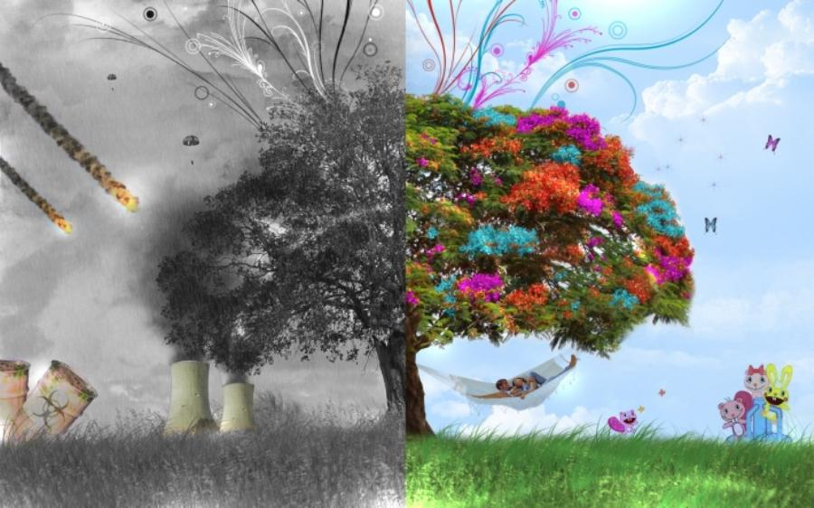

Contaminación
¡Cuida el Planeta!


")
 4
4 5
5 7
7 8
8 9
9 10
10

¡Cuida el Planeta!


Calentamiento global y cambio climático se refieren al aumento observado en los últimos siglos de la temperatura del sistema climático de la Tierra y sus efectos.1 La comprensión científica del calentamiento global ha ido en aumento. En su quinto informe (AR5) el Grupo Intergubernamental de Expertos sobre el Cambio Climático (IPCC) señala que en 2014 los científicos estaban más del 95 % seguros de que la mayor parte del calentamiento global es causada por las crecientes concentraciones de gases de efecto invernadero (GEI) y otras actividades humanas (antropogénicas).6 7 8 Las proyecciones de modelos climáticos resumidos en el AR5 indicaron que durante el presente siglo la temperatura superficial global subirá probablemente 0,3 a 1,7 °C para su escenario de emisiones más bajas usando mitigación estricta y 2,6 a 4,8 °C para las mayores.9 Estas conclusiones han sido respaldadas por las academias nacionales de ciencia de los principales países industrializados10 nota 2 y no son disputadas por ninguna organización científica de prestigio nacional o internacional.12 El cambio climático futuro y los impactos asociados serán distintos en una región a otra alrededor del globo.13 14 Los efectos anticipados incluyen un aumento en las temperaturas globales, una subida en el nivel del mar, un cambio en los patrones de las precipitaciones y una expansión de los desiertos subtropicales.15 Se espera que el calentamiento sea mayor en la tierra que en los océanos y el más acentuado ocurra en el Ártico, con el continuo retroceso de los glaciares, el permafrost y la banquisa. Otros efectos probables incluyen fenómenos meteorológicos extremos más frecuentes, tales como olas de calor, sequías, lluvias torrenciales y fuertes nevadas;16 acidificación del océano y extinción de especies debido a regímenes de temperatura cambiantes. Entre sus impactos humanos significativos se incluye la amenaza a la seguridad alimentaria por la disminución del rendimiento de las cosechas y la pérdida de hábitat por inundación


.jpg)